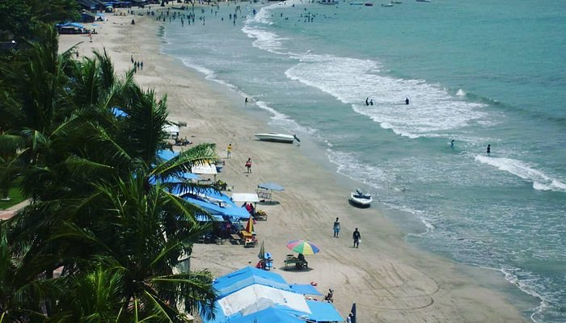
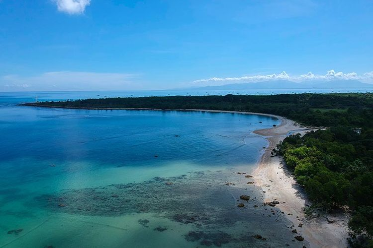
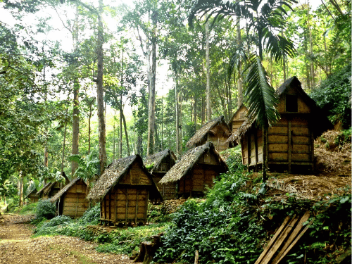

Destinasi Populer
Banten Lama

Masjid Agung Banten Lama menjadi salah satu obyek wisata ziarah bagi umat Islam khususnya masyarakat Banten.
Pantai Anyer
Salah satu pantai yang bisa dijadikan tujuan liburan untuk refreshing. Bisa melihat matahari terbit dan terbenam.
Pantai Tanjung Lesung
Di tepi pantai, pengunjung bisa memandangi keindahan Gunung Krakatau. Tak hanya itu, ada hamparan perairan Selat Sunda yang juga memanjakan mata.
Desa Wisata Saba Budaya Baduy
Suku Baduy, juga dikenal sebagai Urang Kanékés, adalah masyarakat adat dan sub-etnis Sunda yang tinggal di pedalaman Kabupaten Lebak, Banten. Pengunjung yang datang harus siap menghadapi kondisi tanpa listrik, kendaraan, dan barang elektronik seperti ponsel dan kamera di Baduy Dalam.
Tentang Kami
Website yang berdedikasi untuk membantu Anda menemukan tempat wisata terbaik di Banten.
Kontak Kami
Email: bantenantlantis.com
Telepon: +62 831 1687 9203